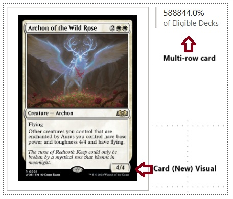
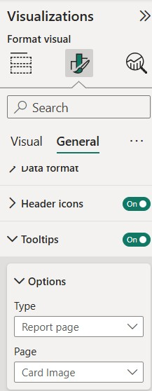

I start building a PowerBI report, or a tracker, to monitor changes to user-submitted decks in EDHREC to see if there are any changes to how players build their decks, if any cards are becoming popular for certain builds, or if some cards are getting out of favor, or outclassed in some builds.
For this post, I focus on getting the necessary data out of EDHREC using web-scraping packages in Python. As the intent is to monitor changes or trends, there will be little analysis possible in this post, so I will be adding these in as I collect more data in the coming months.
A Quick Aside
It’s been four months since my last post, since it’s been quite busy early this year. We went on vacation for a few weeks in North America, and I spent some time with my brother as he was visiting us here in Southeast Asia.
While I have not created any new posts, I have made sure to make some time for my learning, which included getting some of my certifications updated. I have a few mini-projects in mind, so I am hoping to get back on track and share more regularly again.
Introduction
I have an earlier post that introduces the game and the Commander format, so for those who are unfamiliar and want to get a quick background, feel free to read through the “Introduction” of this post.
Given the 100-card nature of the format, the large player base, and the large number of new cards released regularly, there are frequent changes in the format in terms of new cards entering deck builds.
The most popular resource for players of the format is EDHREC. It compiles deck data from multiple sources and gives a summary of the popular builds and cards used for specific decks or commanders.
For my report, I want to leverage the EDHREC data and use it to monitor a subset of decks or a subset of commanders. EDHREC will provide the latest statistics, but I want to keep track of historic stats so I can spot trends that I can probably use to fine-tune decks or identify cards or strategies (for that commander) that have been, or might get more popular.
Below is a sneak preview of the finished (first version) of the tracker:
Extracting Data from EDHREC
With the exception of a list of commanders and the links or URLs to their respective EDHREC pages, all the data I need from the tracker will come from EDHREC. I have used Python to extract the data, and this is done in two major steps:
Extracting the list of cards and statistics for each commander in my list
Extracting the card image URLs for each card, since they were not accessible in the previous step
Each of these steps will be done in separate Python scripts. The extracted data will then be saved in CSV files that will be used to feed the report in PowerBI.
The sections below go through the relevant parts of the final code for each of these, which were built with the help of Copilot. A link is included at the end of each section if the reader would like to access the full code for that step.
Extracting Commander Card Lists
There are six packages used in the final code for this step:
requests - package for making HTML requests, and is the basic package used for web scraping
json - used for working with the JSON format, which is essential since the information I need is contained in a section in the code in this format
pandas - used for working with dataframes, which is the structure used to store the data that is read from or written to the file
os - the package is used in this code to specifically check whether a file or a path exists
re - regular expressions are used in the code to identify string patterns in the code with the required information
datetime - this package will be used to timestamp the information from EDHREC so we can observe trends or refer to a specific date when using the tracker
```{python}}
import requests import json import pandas as pd import os import re from datetime import datetime
The code utilizes a list of commanders stored in a CSV. It currently includes three columns:
- `Commander` - the name of the commander
- `url` - the URL of the EDHREC commander page, which contains the list of cards and statistics
- `Image` - the URL of the card image of that commander
- `Colors` - the commanders will be categorized using their "color". This will be a way to filter the commanders and make selections in the report easier
The url field is the most critical part. The other columns could have been derived using this field, but I have opted for these to be used defined so the code can focus on just pulling information for the cards in the different commanders' decks.
The contents of the input file are stored in a dataframe named `commanders_df`. The code then iterates every row of that data frame to request the data from the webpage indicated under `url`. The required data is in the JSON portion, so it first finds the section using a `str.find()`. It then uses the **json** package to parse the contents and find the relevant tags.
```{python}}
# Get current date
current_date = datetime.today().strftime("%Y-%m-%d")
# List to store results
all_cards = []
for _, row in commanders_df.iterrows():
commander_name = row["Commander"]
url = row["url"]
print(f"Processing data for {commander_name}...")
# Fetch webpage content
response = requests.get(url)
if response.status_code != 200:
print(f"Failed to retrieve webpage for {commander_name}. Status code: {response.status_code}")
continue
# Extract JSON data from the page source
page_content = response.text
json_start = page_content.find('"json_dict":')
if json_start == -1:
print(f"No JSON data found for {commander_name}. Skipping...")
continue
# Extract JSON until '],"card":'
json_data_str = page_content[json_start + len('"json_dict":'):]
json_data_str = json_data_str.split('],"card":', 1)[0] + "]}" # Close JSON properly
try:
json_data = json.loads(json_data_str)
except json.JSONDecodeError:
print(f"Failed to parse JSON for {commander_name}. Skipping...")
continue
# Extract card data
for cardlist in json_data.get("cardlists", []):
header = cardlist.get("header", "Unknown")
for card in cardlist.get("cardviews", []):
raw_label = card.get("label", "N/A")
# Extract percentage using regex
match = re.search(r"\d+%", raw_label)
label_cleaned = match.group(0) if match else "N/A"
all_cards.append([
commander_name,
current_date,
card.get("name", "N/A"),
card.get("inclusion", "N/A"),
label_cleaned, # Only the percentage
"https://edhrec.com" + card.get("url", ""),
header
])The data is then stored in a dataframe and then written to a file named card_data.csv that can be imported into PowerBI.
```{python}}
Convert to DataFrame
df = pd.DataFrame(all_cards, columns=[“Commander”, “Date”, “Name”, “Inclusion”, “Label”, “URL”, “Header”])
Save or append to CSV
if os.path.exists(output_file): df.to_csv(output_file, mode=“a”, header=False, index=False) # Append without headers else: df.to_csv(output_file, index=False) # Create new file
print(f”Data saved successfully to file!“)
## Extracting Card Images
This step uses four packages, three of which were used in the first step already. The additional package used is:
- [time](https://docs.python.org/3/library/time.html) - optional, but included in this code to include a delay between html requests, which could be important if the website has a cap on the number of requests (e.g., per minute)
```{python}}
import pandas as pd
import requests
import time
import reThe cards and their URLs extracted from the first step are loaded into a dataframe named df. The existing or the template output file named card_images.csv is loaded into another dataframe card_images.
```{python}}
Load card_data.csv and keep only ‘Name’ and ‘URL’ columns
df = pd.read_csv(‘card_data.csv’, usecols=[‘Name’, ‘URL’]) df = df.drop_duplicates(subset=[‘Name’])
Load card_images.csv
card_images = pd.read_csv(‘card_images.csv’)
The code will be looking for the image URL using regular expression string stored in `pattern`.
```{python}}
# Regex pattern to match the last occurrence of the image URL
pattern = r'"image_uris":\[\{"normal":"(https://[^"]+)"'The code iterates across rows of df and requests the data from the respective url. The required image url is found in the last instance of pattern, so an index of -1 is used to extract that value from the output of re.findall(). Once done, the code writes back the updated dataframe into card_images.csv
```{python}}
Iterate over df and check if the name exists in card_images
for index, row in df.iterrows(): name = row[‘Name’] url = row[‘URL’]
# Skip if name already exists in card_images
if name in card_images['Name'].values:
continue
print(f"Requesting data for: {name}")
try:
response = requests.get(url)
time.sleep(0.1) # delay to avoid timeouts
# Search for the last occurrence of the image URL in the page source
if response.status_code == 200:
matches = re.findall(pattern, response.text)
if matches:
image_url = matches[-1] # Take the last match
# Append the new row to card_images.csv
new_row = pd.DataFrame({'Name': [name], 'Image': [image_url]})
card_images = pd.concat([card_images, new_row], ignore_index=True)
except Exception as e:
print(f"Error retrieving data for {name}: {e}")Save updated card_images.csv
card_images.to_csv(‘card_images.csv’, index=False) print(“Updated card_images.csv successfully!”)
## Additional Step
To automate the running of the scripts, I have used [**Windows Task Scheduler**](https://learn.microsoft.com/en-us/windows/win32/taskschd/about-the-task-scheduler) to run the script twice a month. This frequency should be sufficient since changes to the decks are usually triggered by new cards, announcements or viral content, which don't happen daily, or even weekly.
# Building in Power BI
The three CSV files containing (1) the commanders, (2) the commander decks' card data, and (3) the image URL of the cards are loaded into separate tables in PowerBI. The first two tables are related by the `Commander` while the last two are related by the card `Name`.
{fig-align="center" width="498"}
A simple report, as shown below, can already be created using these tables which can display the information for a selected commander for a given date.
{fig-align="center"}
There are two limitations to this report:
1. The slicers are left as multi-select ones to allow for a clear filter button. If multiple or no commanders are selected, the tables will display data that could confuse the user. **It would be better to only display data when one commander is selected.**
2. The tables only display the card names, some, or most which might be unrecognizable to users. We can use the card images to add additional information on the cards.
## Displaying Information when only one Commander is Selected
Visual filters can be used to not only display data based on the value of columns, but also based on the value of a measure. A measure that checks the singularity, or the number, of commanders, can be used to achieve our objective of only displaying data when one is selected.
We can create a measure that checks the number of selected `Commander` by using a combination of `COUNTROWS()` and `ALLSELECTED()`. The latter is a necessary filter argument so it preserves all filters applied by slicers.Commanders Selected = CALCULATE( COUNTROWS(commanders), ALLSELECTED(commanders[Commander]) ) ```
Using this measure as a filter in each of the tables and the chart will ensure that they will only display data if only one commander is selected.
Displaying the Card Image as a Tooltip
Given the number of cards that will be displayed at a time on the table and in the chart, displaying the cards will take up a lot of space and be very messy. An alternative is to display the card image in tooltips. This means that the image will only be shown when the user mouses over a particular card name or datapoint.
Images cannot be included in default tooltips, but can be included in report pages which can then be turned into report tooltips. A page can be turned into a tooltip through its formatting options by ticking the “Allow use as tooltip” (under Page Information) and adjusting the size of the canvas (under Canvas Settings)
This Microsoft Learn article gives some more detailed information in creating these tooltips.
I have added two visuals to the tooltip page. A Card (New) visual allows using the image URL as the display image. A Multi-row card allows adding different statistics or measures to display in the tooltip. For now, this will just show the percentage of decklists for that commander that contain that card.

Note that the report page will not show the “right” values since no filters are being applied to the report page itself. This will not be the case when the report appears as a tooltip.
Once this is set up, visuals can be configured to display the report tooltip by going to Tooltips under the General section of Format Visual. Tooltips should be enabled, the Type should be set to Report page. If there are multiple report tooltips, or to avoid confusion, it is also best to specify the page to use as the tooltip.

Next Steps
I will revisit the report later once I have more data in– ideally with at least four data points, or after two months. This will allow me to run more analyses using new measures and report pages that could check trends for the commanders that are being monitored. In the meantime, I will play around with the data that I do have and see if there is some insights that I can use to improve my decks or gameplan.